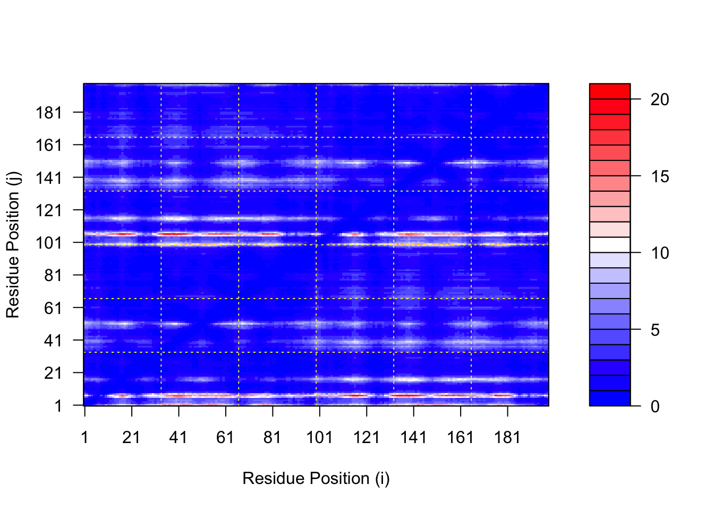
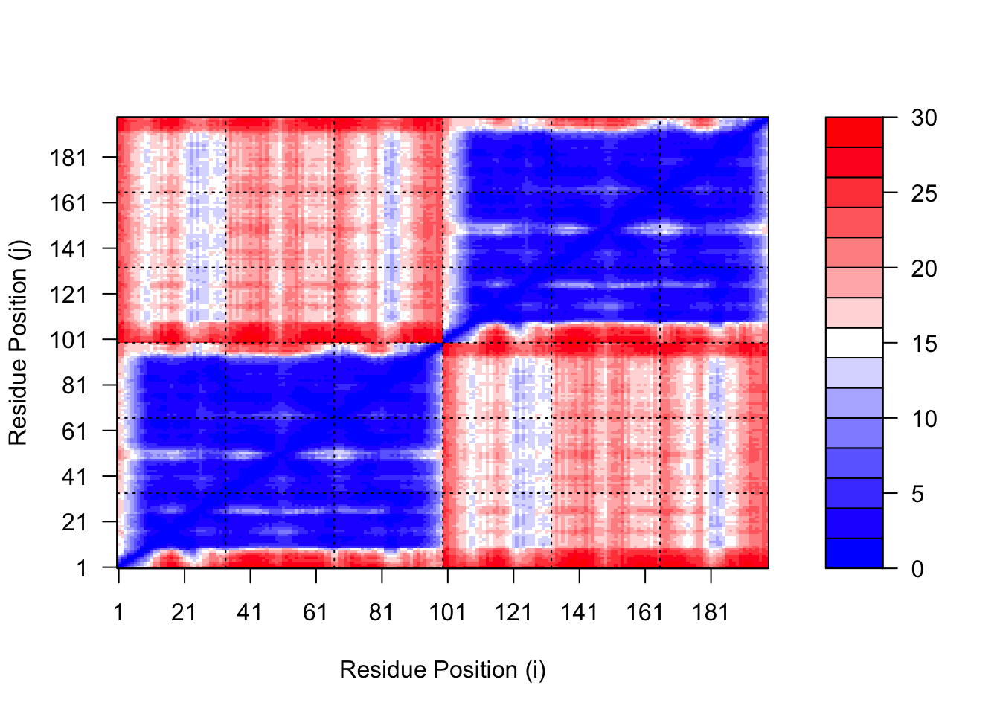
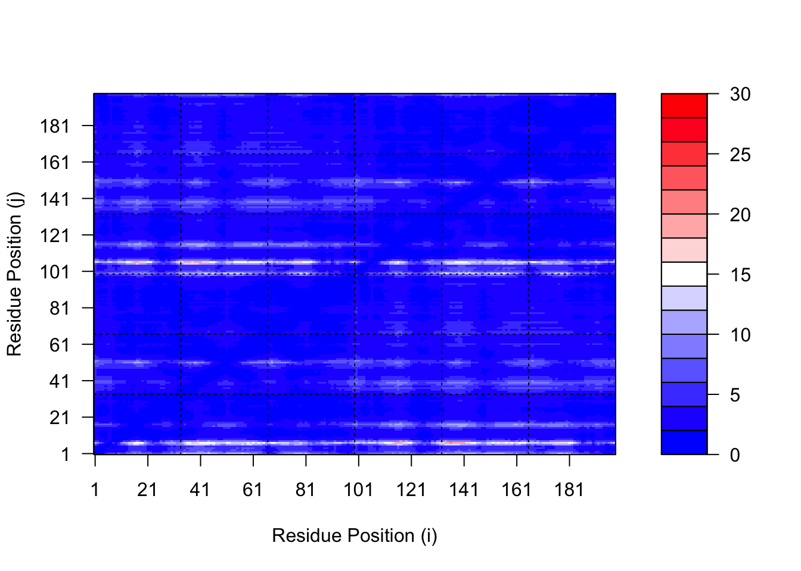

The RMSD heatmap compares structural similarity among the four AlphaFold models. Lower RMSD values indicate models with more similar predicted structures, while higher RMSD values reflect greater structural differences between the models. The clustering pattern suggests that models m1 and m2 are most similar to each other, as are models m3 and m4, forming two major structural groups.
The pLDDT plot illustrates AlphaFold confidence scores across residue positions for the four predicted models. Higher pLDDT values indicate regions of greater structural confidence, while lower values suggest areas of reduced prediction reliability or increased flexibility. Overall, most residues show high confidence, with noticeable drops in specific regions that may correspond to flexible loops, domain boundaries, or structurally uncertain segments.
core <-core.find(pdbs)
core size 197 of 198 vol = 9989.779
core size 196 of 198 vol = 2193.35
core size 195 of 198 vol = 916.817
core size 194 of 198 vol = 803.576
core size 193 of 198 vol = 706.897
core size 192 of 198 vol = 638.424
core size 191 of 198 vol = 597.402
core size 190 of 198 vol = 567.143
core size 189 of 198 vol = 537.176
core size 188 of 198 vol = 506.427
core size 187 of 198 vol = 475.311
core size 186 of 198 vol = 444.447
core size 185 of 198 vol = 417.344
core size 184 of 198 vol = 390.321
core size 183 of 198 vol = 363.34
core size 182 of 198 vol = 344.051
core size 181 of 198 vol = 322.07
core size 180 of 198 vol = 299.703
core size 179 of 198 vol = 281.569
core size 178 of 198 vol = 267.501
core size 177 of 198 vol = 257.419
core size 176 of 198 vol = 245.98
core size 175 of 198 vol = 235.06
core size 174 of 198 vol = 224.504
core size 173 of 198 vol = 200.749
core size 172 of 198 vol = 191.609
core size 171 of 198 vol = 182.108
core size 170 of 198 vol = 173.858
core size 169 of 198 vol = 167.26
core size 168 of 198 vol = 161.254
core size 167 of 198 vol = 155.295
core size 166 of 198 vol = 149.239
core size 165 of 198 vol = 138.944
core size 164 of 198 vol = 134.578
core size 163 of 198 vol = 130.244
core size 162 of 198 vol = 125.771
core size 161 of 198 vol = 121.537
core size 160 of 198 vol = 111.16
core size 159 of 198 vol = 107.48
core size 158 of 198 vol = 104.594
core size 157 of 198 vol = 102.081
core size 156 of 198 vol = 99.832
core size 155 of 198 vol = 95.284
core size 154 of 198 vol = 92.997
core size 153 of 198 vol = 90.807
core size 152 of 198 vol = 88.386
core size 151 of 198 vol = 86.155
core size 150 of 198 vol = 83.627
core size 149 of 198 vol = 80.69
core size 148 of 198 vol = 77.687
core size 147 of 198 vol = 75.42
core size 146 of 198 vol = 73.238
core size 145 of 198 vol = 70.164
core size 144 of 198 vol = 68.727
core size 143 of 198 vol = 66.24
core size 142 of 198 vol = 63.438
core size 141 of 198 vol = 61.533
core size 140 of 198 vol = 59.039
core size 139 of 198 vol = 57.332
core size 138 of 198 vol = 55.58
core size 137 of 198 vol = 54.344
core size 136 of 198 vol = 52.995
core size 135 of 198 vol = 51.401
core size 134 of 198 vol = 50.082
core size 133 of 198 vol = 48.563
core size 132 of 198 vol = 47.103
core size 131 of 198 vol = 45.456
core size 130 of 198 vol = 43.877
core size 129 of 198 vol = 42.401
core size 128 of 198 vol = 40.936
core size 127 of 198 vol = 39.588
core size 126 of 198 vol = 37.95
core size 125 of 198 vol = 36.722
core size 124 of 198 vol = 35.29
core size 123 of 198 vol = 34.309
core size 122 of 198 vol = 33.117
core size 121 of 198 vol = 32.215
core size 120 of 198 vol = 30.711
core size 119 of 198 vol = 30.07
core size 118 of 198 vol = 29.072
core size 117 of 198 vol = 28.139
core size 116 of 198 vol = 26.503
core size 115 of 198 vol = 24.265
core size 114 of 198 vol = 22.642
core size 113 of 198 vol = 22.19
core size 112 of 198 vol = 21.65
core size 111 of 198 vol = 20.072
core size 110 of 198 vol = 19.64
core size 109 of 198 vol = 19.815
core size 108 of 198 vol = 19.888
core size 107 of 198 vol = 20.16
core size 106 of 198 vol = 18.993
core size 105 of 198 vol = 17.897
core size 104 of 198 vol = 16.343
core size 103 of 198 vol = 15.524
core size 102 of 198 vol = 15.372
core size 101 of 198 vol = 13.176
core size 100 of 198 vol = 12.467
core size 99 of 198 vol = 11.05
core size 98 of 198 vol = 10.26
core size 97 of 198 vol = 9.435
core size 96 of 198 vol = 9.932
core size 95 of 198 vol = 9.896
core size 94 of 198 vol = 8.503
core size 93 of 198 vol = 6.768
core size 92 of 198 vol = 5.856
core size 91 of 198 vol = 5.65
core size 90 of 198 vol = 3.458
core size 89 of 198 vol = 2.024
core size 88 of 198 vol = 1.523
core size 87 of 198 vol = 0.897
core size 86 of 198 vol = 0.631
core size 85 of 198 vol = 0.416
FINISHED: Min vol ( 0.5 ) reached
The RMSF plot shows residue flexibility across the fitted AlphaFold models. Higher RMSF values indicate more flexible regions, while lower values represent more stable areas. Residues after position 100 show greater flexibility, suggesting increased structural variation in the second half of the protein.
Predicted Alignment Error for Domains
library(jsonlite)# Listing all PAE JSON files from the AlphaFold folderresults_dir <-"HIVPrDimer_23119/"pae_files <-list.files(path = results_dir,pattern =".*scores.*\\.json",full.names =TRUE)basename(pae_files)
# Read first and last available PAE filespae1 <-read_json(pae_files[1], simplifyVector =TRUE)pae4 <-read_json(pae_files[length(pae_files)], simplifyVector =TRUE)attributes(pae1)
$names
[1] "plddt" "max_pae" "pae" "ptm" "iptm"
# Per-residue pLDDT scores# same as B-factor of PDB..head(pae1$plddt)
[1] 86.06 91.56 91.38 91.81 93.94 84.62
pae1$max_pae
[1] 20.07812
pae4$max_pae
[1] 29.59375
The maximum PAE values compare prediction uncertainty between the AlphaFold models. Lower max PAE values indicate greater model reliability, while higher values suggest increased uncertainty. In this case, model 1 has lower predicted alignment error than model 4, making model 1 the more reliable structural prediction.
Comparing PAE Plots
plot.dmat(pae1$pae,xlab="Residue Position (i)",ylab="Residue Position (j)")

plot.dmat(pae4$pae,xlab="Residue Position (i)",ylab="Residue Position (j)",grid.col ="black",zlim=c(0,30))

plot.dmat(pae1$pae,xlab="Residue Position (i)",ylab="Residue Position (j)",grid.col ="black",zlim=c(0,30))

The PAE plots compare predicted alignment confidence between residue pairs for different AlphaFold models. The Model 1 plot shows mostly low PAE values (dark blue), indicating higher confidence and more reliable domain positioning across the structure. In contrast, Model 4 displays substantially higher PAE values (lighter colors and red regions), especially between major residue blocks, suggesting greater uncertainty in domain arrangement and inter-domain orientation. Overall, Model 1 appears structurally more reliable, while Model 4 shows increased prediction uncertainty and less confident large-scale organization.
The conservation plot shows how strongly each residue is preserved across related sequences, with higher conservation scores indicating positions that are more evolutionarily important or functionally constrained. Regions with higher conservation are often associated with critical structural or functional roles, while lower conservation suggests more variable or flexible residues.
m1.pdb <-read.pdb(pdb_files[1])# uses conservation scores for all residues in the modelsim2 <-rep(sim[1:99], 2)# map residue conservation scores onto every atomocc <- sim2[match(m1.pdb$atom$resno, sort(unique(m1.pdb$atom$resno)))]# write new PDB file for Mol Starwrite.pdb(m1.pdb, o = occ, file ="m1_conserv.pdb")m1.pdb
Call: read.pdb(file = pdb_files[1])
Total Models#: 1
Total Atoms#: 1514, XYZs#: 4542 Chains#: 2 (values: A B)
Protein Atoms#: 1514 (residues/Calpha atoms#: 198)
Nucleic acid Atoms#: 0 (residues/phosphate atoms#: 0)
Non-protein/nucleic Atoms#: 0 (residues: 0)
Non-protein/nucleic resid values: [ none ]
Protein sequence:
PQITLWQRPLVTIKIGGQLKEALLDTGADDTVLEEMSLPGRWKPKMIGGIGGFIKVRQYD
QILIEICGHKAIGTVLVGPTPVNIIGRNLLTQIGCTLNFPQITLWQRPLVTIKIGGQLKE
ALLDTGADDTVLEEMSLPGRWKPKMIGGIGGFIKVRQYDQILIEICGHKAIGTVLVGPTP
VNIIGRNLLTQIGCTLNF
+ attr: atom, xyz, calpha, call
The conservation scores were successfully mapped onto the HIV protease structure and written into a new PDB file for structural visualization. This allows conserved residues to be displayed directly on the 3D model, helping identify functionally or structurally important regions. Highly conserved areas are likely associated with critical biological roles, such as active sites or structurally essential domains.